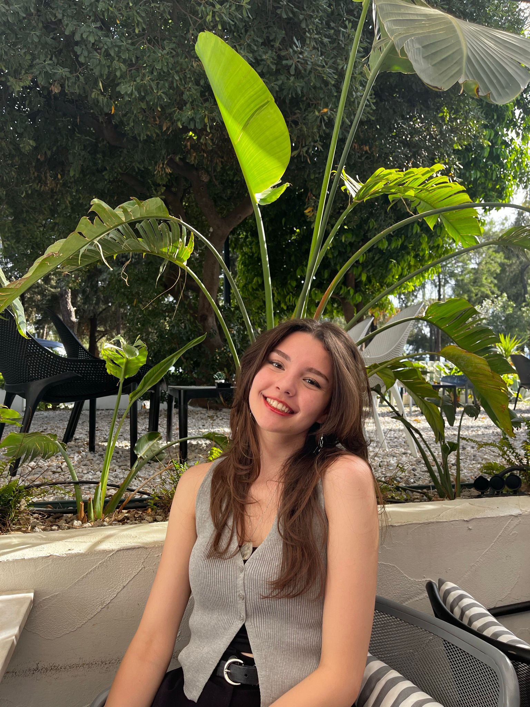

📞 0507 105 11 73 | ✉️ islekelifulku@gmail.com
LinkedIn ProfilimYönetim Bilişim Sistemleri 3. sınıf öğrencisiyim. C#, Kotlin ve web teknolojileri alanlarında kendimi geliştirmekteyim. Mobil uygulama geliştirme ve yazılım projeleri üzerine çalışmalar yapıyorum. İş analizi, veri analizi ve süreç yönetimi alanlarında akademik projeler ve uygulamalar gerçekleştirdim. SWOT, iş modeli ve süreç diyagramları kullanarak raporlama ve sunum deneyimi kazandım. Uzun yıllar lisanslı spor geçmişim sayesinde disiplinli çalışma alışkanlığı ve güçlü takım uyumu geliştirdim. Analitik düşünme yeteneğine sahip, öğrenmeye açık ve disiplinli biriyim.
Ankara Hacı Bayram Veli Üniversitesi
Yönetim Bilişim Sistemleri (MIS) – Lisans
2023 – Devam Ediyor